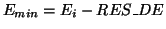
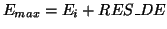
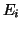

TASCOM-McStas interface @ rita2.psi.ch
Peter Willendrup,
peter.willendrup@risoe.dk
An interface between TASCOM and McStas has been set up at the RITA-2
spectrometer at PSI.
The principal setup is that described in the
document
The TASCOM interface to McStas on the RITA-1
spectrometer
by Kristian
Nielsen. This document describes features special to the RITA-2 setup, when run with the RITA2res.instr instrument definition described below. Differences between the two setups are
- In the above document, the mcstas simulation is run on a remote
machine. Of several reasons, this is not a possible solution with the
current setup of RISØ machines at PSI. Hence, the Mcstas and
Mcstas.conf files of /usr/users/tascomp/rita2m/tas have been
modified accordingly.
- A special tascom macro has been added to TASCOM, in
/usr/user/tasfiles/command/sys/rescalc.tas. The function has
two input parameters
- RES_DE defining the min/max energies

and
 around the incident energy .
- MCNCNT indicating the number of neutron histories to
simulate.
- All other parameters of the virtual instrument are taken
directly from their TASCOM values.
- The instrument file used by rescalc.tas is
/usr/users/tascom/mcstas/instruments/RITA2res.instr.
If you wish
to simulate another instrument, add that file to the same
directory. Be aware that you should set the following variables
correctly before running any scans
- The right MCINST variable in TASCOM, e.g. 'MyInst.instr'
- The right parameter list to transfer to McStas using the TASCOM
command amcstas. Of some reason, this must be done before
performing each scan.
- McStas and related support applications (perl5, perl-Tk, PDL,
pgplot and pgperl) have been installed at the machines
rita2.psi.ch and risoe01.psi.ch. The mcstas subdirectory of the
rita2 tascom account has been mounted (read-only) via nfs to
/home/rita2/mcstas on risoe01. In the AFS mcmorrow account on this
machine, a link 'rita2' to /home/rita2 has been created for easy
access. This means that output data from the simulations can be
easily accessed from risoe01.
A few things are not presently working 100%, these are
- The DATA_DIR variable of TASCOM has to be set to an existing
directory, e.g. 'mydata'. Otherwise, TASCOM can not read data from
McStas. The problem is then that McStas
correctly puts its data in mcstas/data/mydata, but TASCOM puts the
data in mcstas/mydata. Per Skaarup has been contacted regarding
this problem, and we will work together to find a solution. The
solution until then is to create e.g. mcstas/mydata, and live with
the fact that TASCOM puts the data there.
- The list of parameters to transfer to McStas is somehow cleared
between scans. The cause of this is not presently known. The
solution is to set the list using 'amcstas' in tascom before each
scan.
- Another related problem is that if McStas is started without the
correct set of parameters, the mcstas binary asks for these
parameters when starting. Since the tascom window is not functioning
as a tty for mcstas, this will hang the TASCOM/McStas
interface. Sending ctrl+c to TASCOM terminates the pipe McStas, but
the McStas instrument still runs. The solution is to send the
virtual instrument process a KILL signal, e.g.
kill -KILL pid,
where the pid can be found e.g. using ps -u tascom.
- The output directory for the resolution function output
(res.dat) has been hardcoded to /usr/users/tascom/mcstas. The
reason for this is that the file is otherwise placed in the
directory where TASCOM was started.
- The resolution function output can be visualised via the
'mcresplot' program on rita2 as well as risoe01. The graphical
output on rita2 (perl 5.6) looks slightly corrupt, I am currently
looking for a solution to that problem. The data displays fine at
risoe01 (perl 5.005).
- To make mcplotlib.pl and mcresplot run on rita2, the scripts
needed slight adjustments. For this reason, McStas should not be
reinstalled on the machine without backing up these files.
- It turns out that the TASCOM/McStas interface in its present
form is not too general. The parameters returned to TASCOM by
McStas are fixed to MON, I and AUX. This means that if other
values are affected by the scan beeing run, these are not updated
in TASCOM!! I will have to think for a while to find out how to
solve this problem.
- PSD data output by McStas is currently not beeing read correctly
by TASCOM. This might have something to do with the above
mentioned problem of different data directories.
- McStas status output is written to mcstas/mcstas.log in the
tascom account on rita2. Use this to monitor simulation progress.
The goal is to solve the above problems, as well as write a proper
manual for the setup. The RITA2res instrument definition also needs
slightly more work. Once this is done, the manual will be placed at
the rita2 homepage
TASCOM-McStas interface @ rita2.psi.ch
This document was generated using the
LaTeX2HTML translator Version 2K.1beta (1.48)
Copyright © 1993, 1994, 1995, 1996,
Nikos Drakos,
Computer Based Learning Unit, University of Leeds.
Copyright © 1997, 1998, 1999,
Ross Moore,
Mathematics Department, Macquarie University, Sydney.
The command line arguments were:
latex2html -local_icons -split 0 mcstas@rita2.tex
The translation was initiated by Peter Willendrup on 2002-10-19
Peter Willendrup
2002-10-19